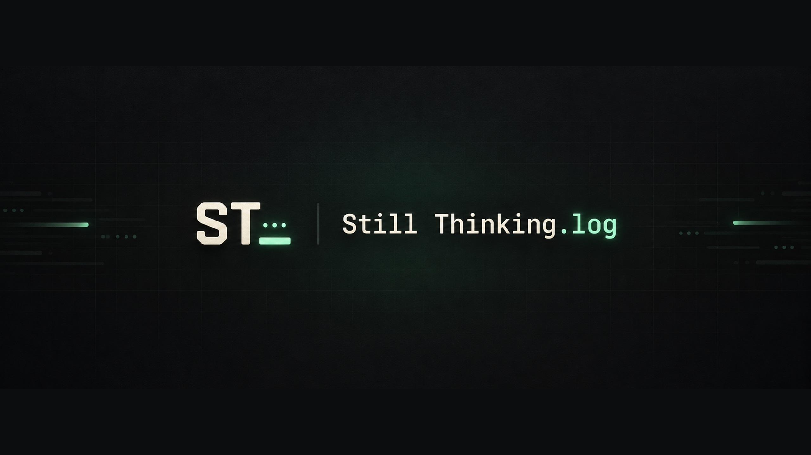
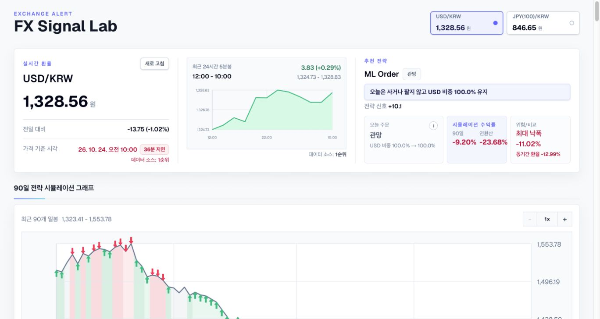

YOUTUBE · BLOG
Still Thinking.log
AI 활용 단계, 파일·Git·에이전트의 기초와 첫 프로젝트를 다루는 유튜브 채널.
AI 활용, 어디까지 배워야 할까요?

YOUTUBE · BLOG
AI 활용 단계, 파일·Git·에이전트의 기초와 첫 프로젝트를 다루는 유튜브 채널.
AI 활용, 어디까지 배워야 할까요?
MATH VILLAGE
연산 연습부터 도형 변환, 숫자와 돌을 이용한 전략 게임까지.
LILARCA
협동 생존, 퍼즐, 러너와 슈팅. 브라우저에서 바로 플레이하는 게임 7개.
EXCHANGE ALERT
달러·엔화 환율과 매수·매도 신호를 확인하고, ML·Range·Swing 전략의 90거래일 시뮬레이션 성과를 비교하는 대시보드.
